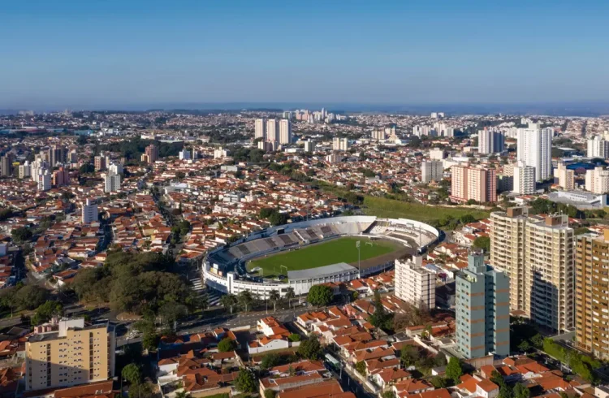

Campinas é um dos maiores e mais influentes municípios do interior paulista, reconhecida como polo de tecnologia, educação e inovação. Fundada em 1774, cresceu inicialmente com a agricultura, especialmente a cana-de-açúcar e o café, mas rapidamente se transformou em um centro urbano estratégico para o desenvolvimento do estado.
A cidade abriga universidades renomadas, como a Unicamp, além de centros de pesquisa e tecnologia que a colocam entre os principais polos de conhecimento do Brasil. Sua economia diversificada, com forte presença industrial e de serviços, garante destaque tanto no cenário nacional quanto internacional.
No turismo, Campinas oferece opções que vão de parques ecológicos a shoppings modernos e atrações culturais. Com uma vida noturna agitada, gastronomia variada e espaços de lazer para todas as idades, o município se tornou referência regional e ponto de partida para outros destinos do interior paulista.
• Bosque dos Jequitibás – Parque urbano com zoológico, trilhas e museu de história natural.
• Catedral Metropolitana de Campinas – Construída em estilo barroco, é um dos símbolos da cidade.
• Observatório Municipal Jean Nicolini – Local voltado para astronomia, ideal para visitas educativas.
• Unicamp – Universidade com campus amplo, museus e atividades culturais abertas ao público.
• Parque Portugal (Lagoa do Taquaral) – Um dos principais espaços de lazer da cidade, com lago, trilhas e pedalinhos.

Retorne a Página Anterior